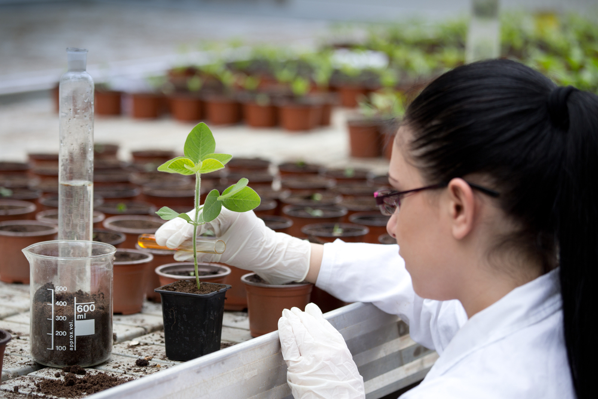
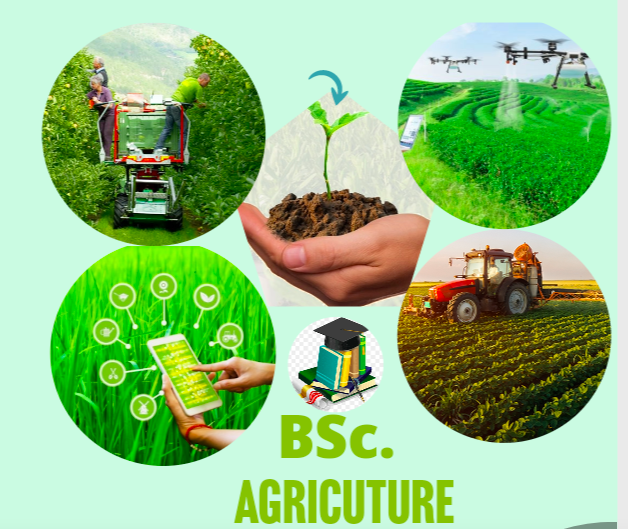
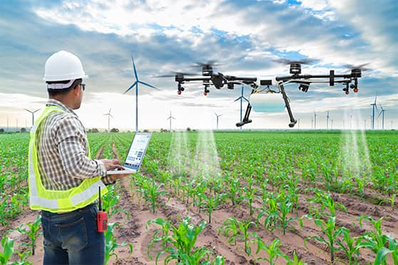

Course ID: BSC007
Course Name: B.Sc in Agriculture
Course Code: AG101
🎯 Scope of B.Sc Agriculture
- Crop Production & Soil Science
- Horticulture, Agronomy & Plant Breeding
- Agroforestry, Organic Farming & Agribusiness
- Animal Husbandry & Dairy Technology
- Plant Pathology, Entomology, and Plant Genetics
- Irrigation Management & Agricultural Economics
✅ Benefits of Studying Agriculture
- 🌾 Knowledge of sustainable and scientific farming techniques
- 💼 Career opportunities in government, private, and global sectors
- 🌱 Supports rural development and food security
- 📈 Huge demand for agriculture technologists & managers
- 🌍 Crucial role in climate-resilient farming and agro-innovation
⭐ Advantages of B.Sc Agriculture
- 🚜 Direct access to field-based and research roles
- 📚 Ideal base for M.Sc Agri, MBA Agribusiness, and other PG programs
- 👨🌾 Involvement in policy, development programs, and agri startups
- 🧪 Scientific training in lab, farm, and industry practices
- 💡 Entrepreneurship opportunities in agro-tech and food processing
📘 Higher Study Options After B.Sc Agriculture
- M.Sc in Agronomy, Horticulture, Soil Science, Genetics
- MBA in Agribusiness Management, Rural Management
- M.Tech in Agricultural Engineering, Food Tech
- PG Diploma in Agroforestry, Seed Technology, etc.
- Ph.D. in Agricultural Sciences or Specializations
- Certificate courses in Organic Farming, Hydroponics
💼 Job Opportunities After B.Sc Agriculture
- 🌾 Agricultural Officer / Extension Officer
- 🧪 Soil Scientist / Agronomist / Plant Breeder
- 🏢 Agriculture Field Officer (AFO) in Banks
- 🌱 Horticulturist / Farm Manager
- 📈 Agri-Marketing Executive / Agri-Business Manager
- 🛰️ Remote Sensing & GIS Analyst (Agricultural Mapping)
- 👨🔬 Research Associate / Lab Technician
- 🐄 Animal Husbandry Supervisor / Dairy Technologist
- 🌍 NGO / Government Program Officer in Rural Development
- 💡 Startup Founder in Organic or Tech-enabled Farming


